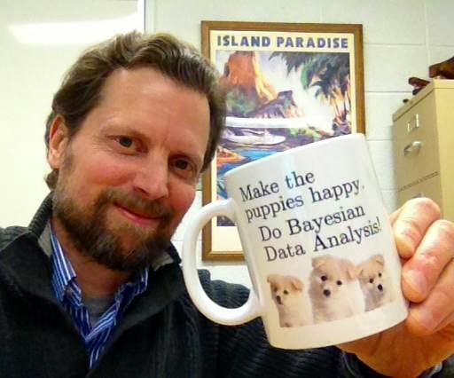
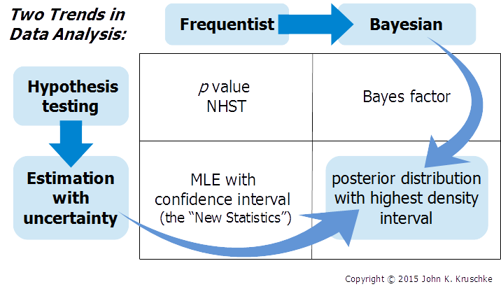
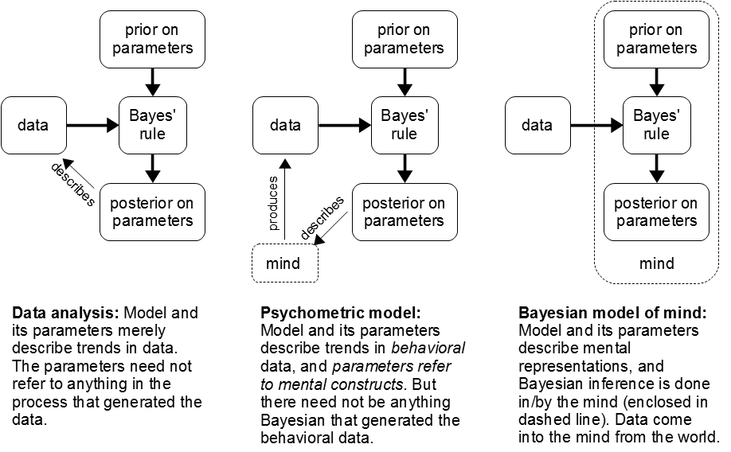

Highly recommended textbook:
Highly recommended textbook:
Doing Bayesian Data Analysis
|
THIS PAGE IS TENTATIVE. DETAILS MAY CHANGE.
Many fields of science are transitioning from null hypothesis significance testing (NHST) to Bayesian data analysis. Bayesian analysis provides rich information about the relative credibilities of all candidate parameter values for any descriptive model of the data, without reference to p values. Bayesian analysis applies flexibly and seamlessly to complex hierarchical models and realistic data structures, including small samples, large samples, unbalanced designs, missing data, censored data, outliers, etc. Bayesian analysis software is flexible and can be used for a wide variety of data-analytic models. (More about why to go Bayesian is described below.) This course shows you how to do Bayesian data analysis, hands on, with free software called R and JAGS. The course will use new programs and examples.
This course is offered through the Interuniversity Consortium for Political and Social Research (ICPSR) Summer Program, at the University of Michigan in Ann Arbor. Registration is required and links are provided below.
| Things to do in Ann Arbor before, during, and after the course: There are July 4 events nearby the course location... ** |
Course Objectives: You will learn
Course Audience: The intended audience is advanced students, faculty, and other researchers, from all disciplines, who want a ground-floor introduction to doing Bayesian data analysis.
Course Prerequisites: No specific mathematical expertise is presumed. In particular, no matrix algebra is used in the course. Some previous familiarity with statistical methods such as a t-test or linear regression can be helpful, as is some previous experience with programming in any computer language, but these are not critical.
Course Topics: (Exact content, ordering, and durations may change.)
|
A brief video that describes Bayesian estimation for comparing two groups, and how Bayesian estimation supersedes the t test. See also this introductory chapter. |
 Who is the instructor?
John Kruschke is eight-time winner of Teaching Excellence Recognition Awards from Indiana University, where he is Professor of Psychological and Brain Sciences, and Adjunct Professor of Statistics. He has written an acclaimed introductory textbook on Bayesian data analysis and many tutorial articles. He has given numerous popular workshops on Bayesian methods. His research interests include the science of moral judgment and Bayesian data analysis. He received the Troland Research Award from the National Academy of Sciences, and the Remak Distinguished Scholar Award from Indiana University. He has been on the editorial boards of several scientific journals, including Psychological Review, the Journal of Experimental Psychology: General, the Journal of Mathematical Psychology, and others.
Doing Bayesian Data Analysis, 2nd Edition: A Tutorial with R, JAGS, and Stan. The book is a genuinely accessible, tutorial introduction to doing Bayesian data analysis. The software used in the course accompanies the book, and many topics in the course are based on the book. (The course uses the 2nd edition, not the 1st edition.) Further information about the book can be found here.
This course is offered as part of the ICPSR Summer Program in Quantitative Methods of Social Research, so you must register to attend. People who are not on the official roster will not be admitted to the classroom. Registration information is at this link. Registration fees are the standard amounts set by ICPSR. The instructor has no control over fees. Please check this ICPSR web page for information about whether your institution is a member of ICPSR.
Install software before arriving.
It is important to bring a notebook computer to the course, so you can run the programs and see how their output corresponds with the presentation material. Please install the software before arriving at the course. The software and programs are occasionally updated, so please check here a week before the course to be sure you have the most recent versions. For complete installation instructions, please refer to this web page.
|  |
| Two historical trends in data analysis, that converge on the methods presented in this workshop Manuscript here. (NHST = null hypothesis significance testing. MLE = maximum likelihood estimation.) |
Sciences from astronomy to zoology are changing from null-hypothesis significance testing to Bayesian data analysis, because Bayesian analysis provides richer information with great flexibility and without need for p values. Read more:
*Your click on this link constitutes your request to the author for a personal copy of the article exclusively for
individual research.
|  |
| Read more at this blog entry. |
Data analysis involves "generic" descriptive models
(such as linear regression) without any necessary interpretation as
cognitive computation. The rational way to estimate parameters in
descriptive models is Bayesian, regardless of whether or not Bayesian
models of mind are viable. The concepts and methods of Bayesian data
analysis transfer to other Bayesian models, including Bayesian models
of cognition. Read more at this blog entry.